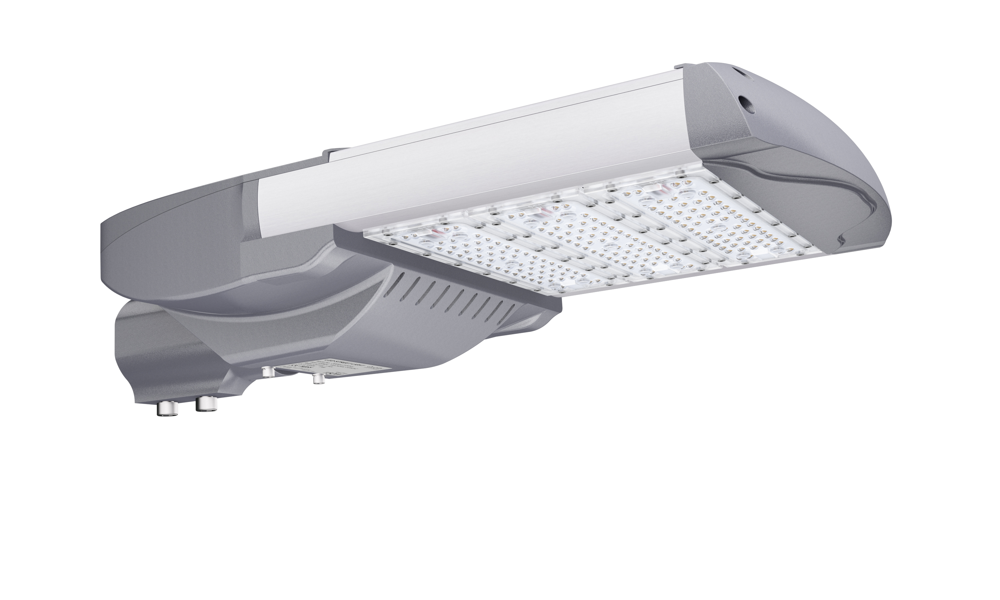

杭州中港数码技术有限公司
它具有以下特点:
1:铝压铸电源腔体、铝型材散热
2:模块式发光,抗紫外线PC透镜
3:最大输出功率高达240W
4:采用国内知名品牌电源
5:3030光效140LM/W
6:5050光效165LM/W
7:仰角可调
8:水平、垂直皆可安装

可选光谱:
TYPE I-M(30)
TYPE II-M(30/50)
TYPE II-BLS(30)
TYPE III-M(30/50)
TYPE V-S(30/50)
可选显指:
70
80
90
取得认证:
CE/CB
ENEC
ROHS
IK10/IP66
LM79/LM80
UL
GS
FCC
SAA